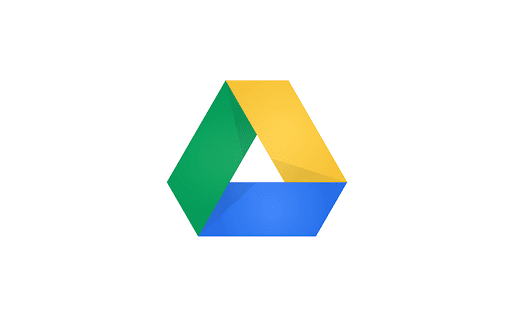
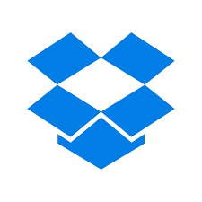
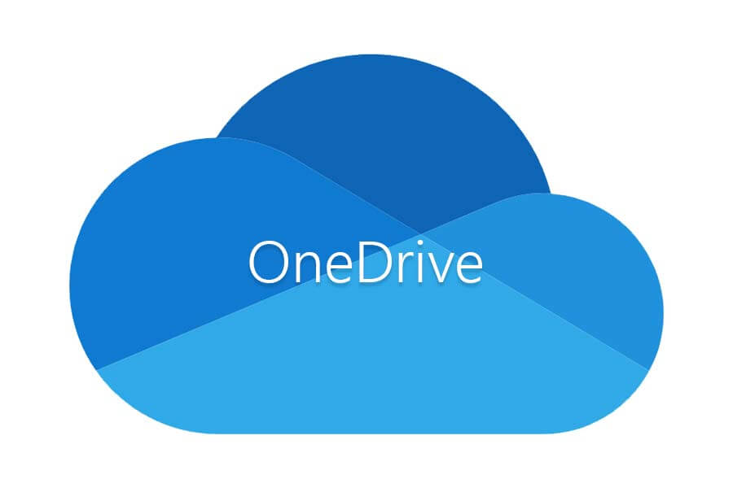
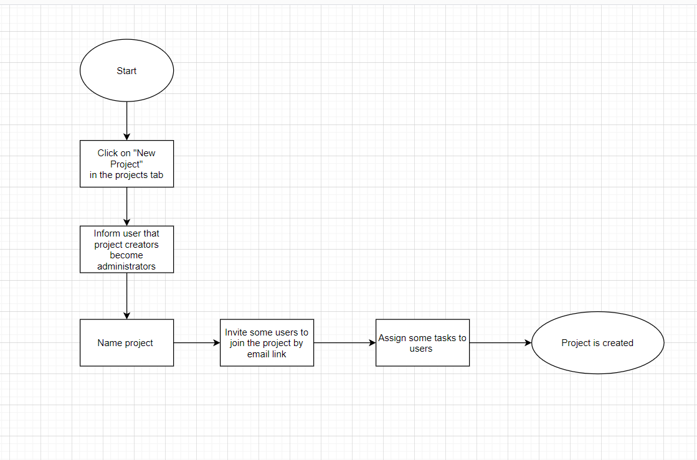
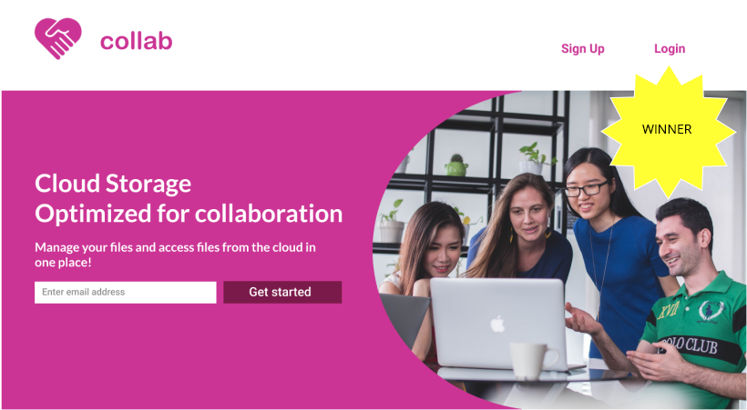
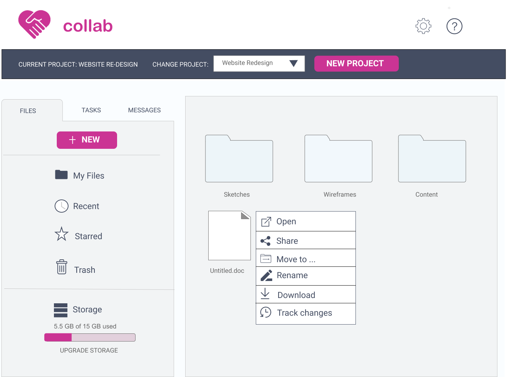
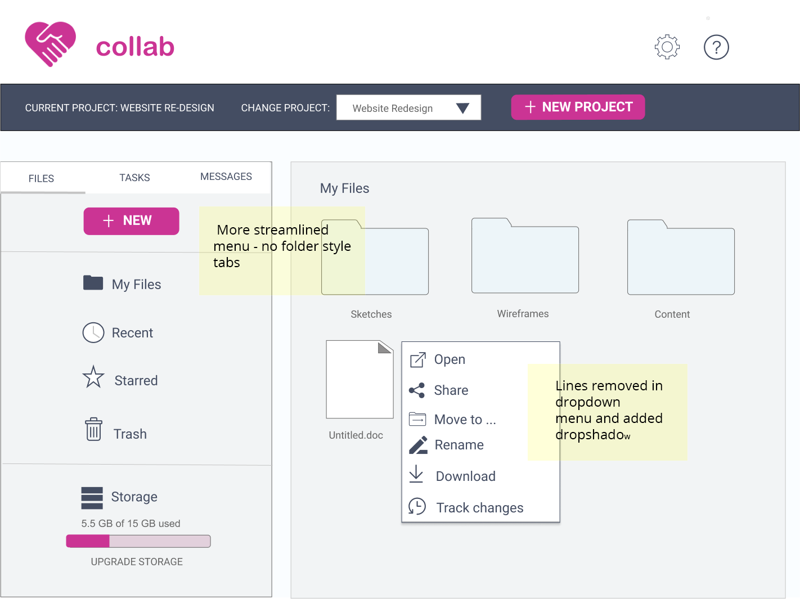

Yes, there are many cloud storage applications on the landscape in 2020.
But how many combine cloud storage with project management features?View Prototype
Introduction
Problem
The client wanted to enter the cloud storage application market, but was faced with competing with seasoned companies already in the field ie Google, Dropbox, Box,
Evernote, Pinterest, etc. They needed the right set of features to appeal to a particular audience.
Solution
In the user survey, I noticed that high percentages of users liked features that could be grouped under "project management". I brainstormed to have all activity be centered around a "project". Users can change and create projects. Each project has its separate file, messaging and tasks ecosystem. I thought that a cloud storage application with light project management features could be the
"right" set of features the client was looking to offer users to distinguish themselves from the pack.
Discovery Phase
User Survey
60% of users used cloud storage for file storing
26.7% of users used cloud storage for file sharing
60 of users used collaboration features in cloud storage
I conducted a competitive analysis of Google Drive, Dropbox, and Onedrive - the three
most used cloud storage services among my survey respondents. Comparison
between these applications are summarized in the chart below.
Google Drive is the clear winner among free space given to users with
15mb. Dropbox is the winner in filing sharing security. It can set
passwords and expiry date when sharing files. Integrations with
Office 365 makes Onedrive the top choice for using a office suite with cloud
storage. Dropbox is also the winner in file syncing speed. For collaboration
tools, all 3 competitors seem to offer real time authoring and file sharing.
Competitor
Strengths
Weaknesses
Opportunities
Threats
Google Drive 
-has full-featured office suite to create and share documents, spreadsheets and slides online
-easy integration for Android users
-weak file sharing security -Office suite less capable than Microsoft Office
-support Microsoft Office users more to potentially take over Microsoft Onedrive market share -offer better file sharing security
-many organizations are tied to Microsoft Office hence will be tied to Microsoft Onedrive
-Google’s high profile make it a prime target for hackers
Dropbox 
-integrates with both Office Online and Office 365 -Dropbox is faster than both Google Drive and Onedrive
-has 2GB file storage quota for free users
-with Dropbox Professional subscription, you can add link passwords, expiry dates When sharing files
-offer link passwords for free Dropbox users
-up the file storage quota for free users
Google Drive, more than other competitors challenging Dropbox for supremacy
-2012 breach that saw some 68 million user passwords stolen following the theft of an employee password
Microsoft Onedrive
-Seamless integration into Office 365 -ability to collaborate/edit files without an account
-Only 5GB free file storage limit, much less than Google Drive
-Cannot create passwords for shared links
-raise the free storage limit -Offer file versioning for non-Microsoft Office documents
Microsoft is prone to hackers b/c of popularity -data loss
A new competitor could concentrate on a core set of features for a niche audience, instead of trying to be the “cloud storage service for everyone” as the Big Three have done. I see that existing cloud storage providers do have collaboration features such as multi-level file sharing and real time authoring, However I envision all features to function on a per project level with their unique set of tasks, file and messaging system for each project for optimal collaboration.
With the data from the user survey, I constructed two user personas
Name: Maria
Profession:University student who acts as
a project group leader.
Frustrations: She detests piecing together paper bits
of a project from other students.
Motivations/Goals: She wishes for real-time authoring
tools for her fellow students,
being able to share a link to the project the professor, and built-in instant messaging tools.
Name:Robert
Profession:Web project manager for a Fortune 500 company. His team includes remote workers from halfway around the world.
Frustrations: Laggy real-time co-authoring tools.
Motivations/Goals He is interested in real-time co-authoring tools that work smoothly and only if it shows who is authoring what on the screen. He would like an in-app messaging tool as well.
Based on the research mentioned, I wrote out 20 user stories with nine high priority user stories that will be included in the Minimum Viable Product, and will be mapped out further with user flows.
ROLE
TASK
IMPORTANCE
As a new user
I want to be able to sign into account
high
As a returning user
I want to upload a file
high
As a returning user
I want to organize files into folders
high
As a returning user
I want to share documents using a special hyperlink
high
As a returning user
I want to real-time co-author a document with another user
high
As a returning user
I want to create a project
high
As an administrator
I want to specify users to invite to a project
high
As a returing user
I want to send messages to the administrator
high
As a returning user
I want to see tasks assigned to me
high
As a returing user
I want to send messages to the administrator
high
As an administrator
I want to set different read write permissions levels to users
medium
As an administrator
I want to assign tasks to users
medium
As a returning user
I want to specify different read write permissions levels for the links that I share
medium
As a returning user
I want to share a folder using a special hyperlink
medium
As a returning user
I want to check off tasks when completed
medium
As a returning user
i want to able to send direct messages to teamates
medium
As a returning user
I want email updates to keep me informed of the changes to my document
low
As a returning user
I want to show version history of file
low
I took inspiration for mapping out the user flows from processes in Google and Dropbox. The user flow diagrams included flows for signing up for an account, creating a new project, organizing a file, sharing a file, uploading a file, real-time co-authoring a document, seeing the file version history, sending messages to a teammate, and checking off completed tasks..

Create a New Project as Administrator User FlowView User Flows
After sketching a few ideas on paper, I started to wireframe the user flows in Figma. Again I took inspiration from Google and Dropbox user interface to keep the app
familiar to my users. Below are the wireframes for moving an item from one folder to another.
The product is suited for anyone who wants to collaborate on a project together. It should appeal to both business and student users. I am rejecting the corporate looking blue color scheme of Dropbox. I.would like the colors to hint at a fresh, playful
space to get the creative juices flowing when working on projects With these emotions in mind I created a moodboard from which I pulled the primary color to be fuschia. It should only be sprinkled in light splashes. Too much fuschia
can easily be overpowering and overly feminine.
Next I created a styleguide to further solidify the design patterns. I chose accent colors
of grey, light blue and dark blue to balance out fuschia. Headlines and body text are
rendered in Roboto . It is simple, utilitarian and looks great on buttons.
As the cloud storage application focuses on project management, I would like to focus the branding around the word "collaboration".
From a mindmapping exercise, I found that the phrase to "lend a hand" had connections with collaboration. From the "hands" association I made a logo of shaking hands inside the heart, the heart representing sharing and harmony.
Logo Sketches
Hi-fi Mockups
At long last I was ready to design the Hi Fi Mockups. Here are mockups of the "Tracking History of a File" process.
I took the time to perform AB testing on few separate design issues. I found that users preferred a cut out oval picture of a group of people collaborating in front of the computer. Users preferred a smaller type size for the project toolbar on top of every page, as it is more "elegant." They preferred a calendar with the task listings in the Task
Manager versus without. Here are the 3 contenders from the hero image preference test:
Signup Horizontal Slant - 27% preferred

Signup Cut-out Oval - 40% preferredSignup Slant Laptop - 33$ preferred
Usability Testing
Users received the visual aspects of the final design well. The suggestions for further refinements included the following.
- There was a form field that was "unclear to the user what info should be entered."
When uploading files to a new project, with the drag and drop uploader there should also be a link to "browse for files".
For the restore a document function, there should be a timestamp for each restore point would be make it much more useful.
There should be more attempts to use modern frameworks such as Material Design
In the prototype.
I implemented the technical issues above. I also got rid of the folder styled tabs, and replaced with streamlined Material Design tabs. I also updated the right click menus by adding a drop shadow and deleting divider lines to also conform with Material Design.
Below are images of the before and after Material Design change.

Material Design Before

Material Design After
What I learnt
I think that it was wise to pair fuschia ( to add a "burst of energy" to the app) with expanses of low chroma colors such as grey and light blue in the background. Negative feedback about the overall design was that it was "a bit old fashioned" and only had a "splash of pink". to separate it from the wireframes. Immediately, I added more complementary colors and took to Material Design to update the look of some components.
My doubts going into the project were that the market is already saturated with cloud storage applications and it would be very hard to carve a niche. It genuinely surprised me that so many users were looking for a collaboration tools in cloud storage.
 View Survey
View Survey